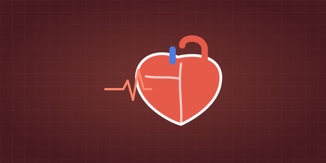

Anatomy & Physiology · free to start OpenStax and HAPS aligned
Anatomy &Physiology
how your body is built
27 chapters and 162 topics, each taught before it is used.
Pick up where you left off
The path through Anatomy & Physiology
Every lesson, skill, practice set and unit test, in course order.
01Chapter 1Orientation to the body6 topics
02Chapter 2Chemistry and physics for physiology8 topics
03Chapter 3Cells9 topics
04Chapter 4Tissues4 topics
05Chapter 5Signals, repair and control6 topics
06Chapter 6Integumentary system4 topics
07Chapter 7Bone tissue5 topics
08Chapter 8The skeleton5 topics
09Chapter 9Joints3 topics
10Chapter 10Muscle tissue8 topics
11Chapter 11The muscular system5 topics
12Chapter 12Nervous tissue and neural signaling4 topics
13Chapter 13The brain and spinal cord4 topics
14Chapter 14Nerves, reflexes and pathways6 topics
15Chapter 15Special senses3 topics
16Chapter 16The autonomic nervous system3 topics
17Chapter 17The endocrine system6 topics
18Chapter 18Blood5 topics
19Chapter 19The cardiovascular system16 topics
Start with Heart location, coverings, chambers and great vessels
20Chapter 20Lymphatic and immune systems6 topics
21Chapter 21The respiratory system9 topics
22Chapter 22The digestive system7 topics
Start with Organization and regulation of the digestive system
23Chapter 23Metabolism and nutrition5 topics
24Chapter 24The urinary system6 topics
25Chapter 25Fluid, electrolyte and acid–base balance4 topics
26Chapter 26The reproductive system6 topics
27Chapter 27Development and inheritance9 topics
jump anywhere, everything you finish stays done
Finishing a lesson or marking a stop done moves the path; practice answers do not. Your path’s answers are saved on this device; what you finish counts everywhere you are logged in.
Cell Scout
Level 1 · 0 XP · 0 / 100 XP to Level 2. One level and one streak count across every LevlPrep course.
Levels of organization and organ systems
Foundations · Orientation to the body. Foundations is recommended, not required: nothing is locked.
Start the first lessonMissed questions come back
Anything you miss returns when you are about to forget it, not on a fixed date.
Open review →A little every day
Questions, cards and tool steps count toward a daily goal and a streak shared across every LevlPrep subject. 0 of 15 today.
Practice now →Video lessons


Tools



Anatomy & Physiology
from $20.30$29
| What you get | Free$0 | Premium$20.30$29$34.30$49 |
|---|---|---|
| Notes, glossary and flashcards | Included | Included |
| Interactive lessons | Foundations chapters | Every chapter |
| Practice and review questions | 15 a day | Unlimited |
| Full exams | One | Unlimited |
| Interactive tools | Three | Every tool, with the lab practical |
| Detailed dashboard analytics | Not included | Included |
| Your progress, XP, streak and weak topics | Included | Included |
One payment for semester (5 months). Founding price · $29 from February 1, 2027One payment for full year (a&p i and ii). Founding price · $49 from February 1, 2027
Full refund within 7 days · Never renews · Secure checkout by Polar
Questions
Is this course free?
What does the course cover?
Has it been reviewed?
Is LevlPrep affiliated with the exam?
More questions, about who makes LevlPrep and how the questions are written, are answered on About.